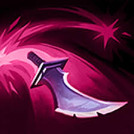
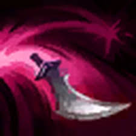
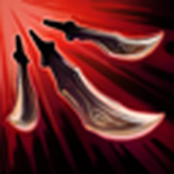

Katarina 🔪

Who is Katarina?
Katarina is a deadly assassin from Noxus in League of Legends, known for her speed, precision, and ability to eliminate enemies in seconds.
Lore
Born into the powerful Du Couteau family, Katarina was trained from a young age to become a skilled assassin serving the Noxian empire.
Despite her talent, she once failed a mission due to acting on her own instincts. Since then, she has worked to prove her strength and loyalty to Noxus.
🎮 Gameplay
Katarina Highlights 🔥
Pro Katarina Plays ⚔️
Personality
Katarina is confident, independent, and fearless. She trusts her instincts and is willing to take risks to complete her mission.
Abilities
-

Bouncing Blade: Throws a dagger that bounces between enemies. -
Preparation: Spins, dropping a dagger and gaining movement speed.
-

Shunpo: Teleports to a target location or enemy. -

Death Lotus: Spins rapidly, throwing daggers at nearby enemies.